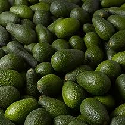

What Hass Holds for the Future
Hass avocados have become popular in recent years due to their taste and nutritional benefits. There are numerous advantages to planting Hass avocados, some of which are mentioned below:
- High Yield: Hass avocado trees are known to produce high yields compared to other avocado varieties, making them a profitable crop for farmers.
- Longer Fruit Shelf Life: The fruits of the Hass avocado tree have a longer shelf life than other avocado varieties, which makes them an attractive choice for commercial growers and exporters.
- Good Disease Resistance: Hass avocado trees are resistant to diseases such as root rot, making them a hardy plant that requires less care and maintenance.
- Ease of Propagation: Hass avocado trees are easy to graft, which makes them easy to propagate and cultivate.
- High Nutritional Value: Hass avocados are known for their high nutritional value and are a good source of fiber, potassium, and vitamins C and E.
- Profitability: The demand for Hass avocados is high both locally and internationally, which makes planting them a profitable venture for farmers.
